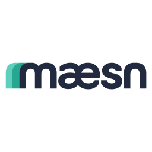
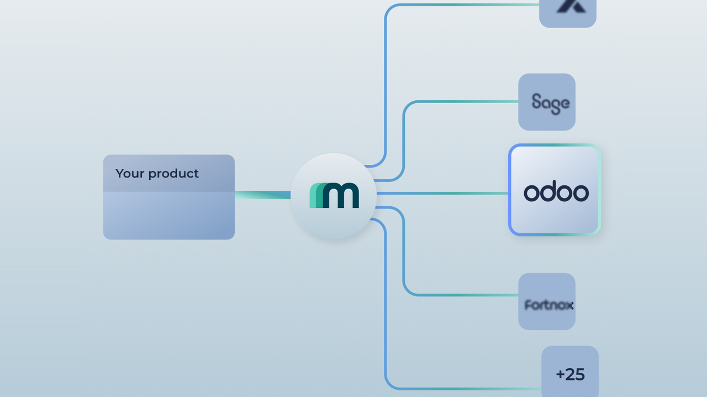

maesn is a Unified API platform built in Germany that lets SaaS companies, fintechs and banks launch integrations with Odoo and more than 50 other European accounting and ERP systems in days instead of months. Instead of building and maintaining every integration yourself, you integrate once with maesn and reach an entire category of systems through a single, normalized data model: including DATEV, SAP, Microsoft Dynamics, Sage, Visma, Exact Online and, of course, Odoo.
Companies like Tipalti (US payables automation), Rally (Y Combinator), Findity (spend management) and Agicap (cash flow management) use maesn to offer their customers native accounting and ERP integrations without building them in-house.
This module adds a maesn menu entry to your Odoo instance that takes you directly to the maesn Odoo integration page, where you can learn how the Odoo connector works and how to integrate Odoo data into your own software through the maesn Unified API.
Note: maesn is an external service. Using the maesn platform requires a maesn account. The module itself is free and does not modify or transfer any of your Odoo data.

Create invoices in Odoo directly from your product, sync accounts payable and receivable, and automate payment reconciliation for your customers.
Keep contacts, suppliers and master data in sync between your software and your customers' Odoo instances, without manual exports or CSV uploads.
Read journal entries, payments and tax data from Odoo through a normalized model to power cash flow forecasting, lending decisions and financial reporting.
Integrations are a feature your customers pay for. Launch an integration marketplace without hiring an integrations team.
One integration with the maesn Unified API replaces dozens of individual builds, including auth, rate limits, error handling and maintenance.
Products that are connected to a customer's ERP and accounting stack see lower churn and higher expansion revenue.
Odoo's native API runs on XML-RPC and JSON-RPC rather than REST. maesn abstracts the entire RPC layer, session-based authentication and per-customer base URLs behind one clean REST interface. You build against the maesn Unified API once and reach every Odoo deployment. Details on the maesn Odoo integration page.
No. With maesn you do not build point-to-point connections. Your one integration with the maesn Unified API covers Odoo, DATEV, SAP, Sage, Visma, Exact Online and 50+ other systems through the same normalized data model.
Yes. The module is free and open. The maesn platform itself is a commercial service with plans based on the number of connections and API usage.
maesn is built for SaaS companies, fintechs, neobanks and banks that want to offer their customers native integrations with Odoo and other accounting and ERP systems, without building and maintaining each one internally.
Yes. maesn is developed and operated by maesn GmbH, based in Düsseldorf, Germany. The platform is ISO 27001 certified, fully GDPR compliant and hosted in the EU, and it supports regulatory requirements such as DORA for financial services customers.
No. This module only adds a menu entry. Any data access runs through the maesn platform and is configured explicitly by you, with full control over scopes and connected systems.
The maesn Odoo connector supports current Odoo versions, both Community and Enterprise, including Odoo Online, Odoo.sh and self-hosted deployments. See the developer documentation for the full compatibility matrix.
Start on maesn.com/integrations/odoo or dive into the API documentation.
maesn GmbH, Düsseldorf, Germany. Trusted by Tipalti, Rally (YC), Findity, Agicap and Nordhealth.